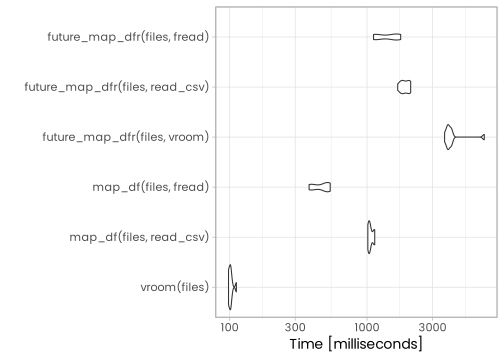
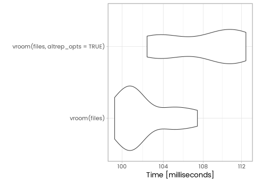

library(tidyverse)
library(vroom)
library(data.table)
library(ggpmthemes)
theme_set(theme_poppins(base_size = 14))Many R packages can be used to read plain rectangular data files. Among them, readr and data.table are quite popular options. Recently, the vroom package have been published on CRAN by Jim Hester. While I do not know much about the technology behind the scene, Jim says:
But that’s impossible! How can it be so fast?
vroom doesn’t stop to actually read all of your data, it simply indexes where each record is located so it can be read later. The vectors returned use the Altrep framework to lazily load the data on-demand when it is accessed, so you only pay for what you use. This lazy access is done automatically, so no changes to your R data-manipulation code are needed.
Because I often have to read large data files, I decided to try this new promising package.
In the next sections, I will compare several methods to read a plain CSV file. The file I will be using contains bike commute data from capital bike share. The file contains roughly 170 000 observations and 9 variables.
file <- curl::curl_download("https://s3.amazonaws.com/capitalbikeshare-data/201801-capitalbikeshare-tripdata.zip", destfile = tempfile(fileext = ".zip"))
file <- unzip(file, exdir = tempdir())
read_csv(file)Rows: 168590 Columns: 9
── Column specification ────────────────────────────────────────────────────────
Delimiter: ","
chr (4): Start station, End station, Bike number, Member type
dbl (3): Duration, Start station number, End station number
dttm (2): Start date, End date
ℹ Use `spec()` to retrieve the full column specification for this data.
ℹ Specify the column types or set `show_col_types = FALSE` to quiet this message.# A tibble: 168,590 × 9
Duration `Start date` `End date` Start stat…¹ Start…² End s…³
<dbl> <dttm> <dttm> <dbl> <chr> <dbl>
1 552 2018-01-01 00:05:06 2018-01-01 00:14:18 31104 Adams … 31400
2 1282 2018-01-01 00:14:30 2018-01-01 00:35:53 31321 15th S… 31321
3 1265 2018-01-01 00:14:53 2018-01-01 00:35:58 31321 15th S… 31321
4 578 2018-01-01 00:15:31 2018-01-01 00:25:09 31406 14th &… 31103
5 372 2018-01-01 00:18:02 2018-01-01 00:24:15 31618 4th & … 31619
6 369 2018-01-01 00:18:07 2018-01-01 00:24:17 31618 4th & … 31619
7 486 2018-01-01 00:19:07 2018-01-01 00:27:14 31042 Market… 31098
8 1615 2018-01-01 00:21:55 2018-01-01 00:48:50 31042 Market… 31045
9 1598 2018-01-01 00:22:02 2018-01-01 00:48:41 31042 Market… 31045
10 483 2018-01-01 00:22:10 2018-01-01 00:30:14 31115 Columb… 31509
# … with 168,580 more rows, 3 more variables: `End station` <chr>,
# `Bike number` <chr>, `Member type` <chr>, and abbreviated variable names
# ¹`Start station number`, ²`Start station`, ³`End station number`
# ℹ Use `print(n = ...)` to see more rows, and `colnames()` to see all variable namesBecause the vroom() function can use a vector of files, I will duplicate file 10 times.
files <- rep(file, 10)
files [1] "/tmp/RtmpMRMqo4/201801_capitalbikeshare_tripdata.csv"
[2] "/tmp/RtmpMRMqo4/201801_capitalbikeshare_tripdata.csv"
[3] "/tmp/RtmpMRMqo4/201801_capitalbikeshare_tripdata.csv"
[4] "/tmp/RtmpMRMqo4/201801_capitalbikeshare_tripdata.csv"
[5] "/tmp/RtmpMRMqo4/201801_capitalbikeshare_tripdata.csv"
[6] "/tmp/RtmpMRMqo4/201801_capitalbikeshare_tripdata.csv"
[7] "/tmp/RtmpMRMqo4/201801_capitalbikeshare_tripdata.csv"
[8] "/tmp/RtmpMRMqo4/201801_capitalbikeshare_tripdata.csv"
[9] "/tmp/RtmpMRMqo4/201801_capitalbikeshare_tripdata.csv"
[10] "/tmp/RtmpMRMqo4/201801_capitalbikeshare_tripdata.csv"I can now simply use this character vector with vroom(). Note that I can also use the .name_repair argument to clean column names.
df <- vroom(files, .name_repair = ~janitor::make_clean_names(.))Rows: 1685900 Columns: 9
── Column specification ────────────────────────────────────────────────────────
Delimiter: ","
chr (4): start_station, end_station, bike_number, member_type
dbl (3): duration, start_station_number, end_station_number
dttm (2): start_date, end_date
ℹ Use `spec()` to retrieve the full column specification for this data.
ℹ Specify the column types or set `show_col_types = FALSE` to quiet this message.df# A tibble: 1,685,900 × 9
duration start_date end_date start_stat…¹ start…² end_s…³
<dbl> <dttm> <dttm> <dbl> <chr> <dbl>
1 552 2018-01-01 00:05:06 2018-01-01 00:14:18 31104 Adams … 31400
2 1282 2018-01-01 00:14:30 2018-01-01 00:35:53 31321 15th S… 31321
3 1265 2018-01-01 00:14:53 2018-01-01 00:35:58 31321 15th S… 31321
4 578 2018-01-01 00:15:31 2018-01-01 00:25:09 31406 14th &… 31103
5 372 2018-01-01 00:18:02 2018-01-01 00:24:15 31618 4th & … 31619
6 369 2018-01-01 00:18:07 2018-01-01 00:24:17 31618 4th & … 31619
7 486 2018-01-01 00:19:07 2018-01-01 00:27:14 31042 Market… 31098
8 1615 2018-01-01 00:21:55 2018-01-01 00:48:50 31042 Market… 31045
9 1598 2018-01-01 00:22:02 2018-01-01 00:48:41 31042 Market… 31045
10 483 2018-01-01 00:22:10 2018-01-01 00:30:14 31115 Columb… 31509
# … with 1,685,890 more rows, 3 more variables: end_station <chr>,
# bike_number <chr>, member_type <chr>, and abbreviated variable names
# ¹start_station_number, ²start_station, ³end_station_number
# ℹ Use `print(n = ...)` to see more rows, and `colnames()` to see all variable namesBenchmark
One advantage of vroom is its speed. In what follows, I will compare different methods to read the files vector that contains 10 files. I will also use the furrr package to use map in parallel.
library(furrr)
# How many cores to use
plan(multiprocess(workers = availableCores() - 1))
res <- microbenchmark::microbenchmark(
vroom(files),
map_df(files, read_csv),
map_df(files, fread),
future_map_dfr(files, vroom),
future_map_dfr(files, read_csv),
future_map_dfr(files, fread),
times = 10
)
autoplot(res)
As we can see, the vroom package is the winner. It is even considerably faster than the versions using map in parallel, which surprises me! Please leave a message below if you have an explanation.
Using Altrep
Another feature of the vroom() function is that we can decide which column types are using Altrep. Setting altrep_opts = TRUE will enable Altrep for all column types. As seen below, this increases further the speed of the vroom() function.
res <- microbenchmark::microbenchmark(
vroom(files),
vroom(files, altrep_opts = TRUE),
times = 10
)Warning: The `altrep_opts` argument of `vroom()` is deprecated as of vroom 1.1.0.
Please use the `altrep` argument instead.
This warning is displayed once every 8 hours.
Call `lifecycle::last_lifecycle_warnings()` to see where this warning was generated.autoplot(res)
Based on these results, I think that vroom will become part of my daily workflow from now on.